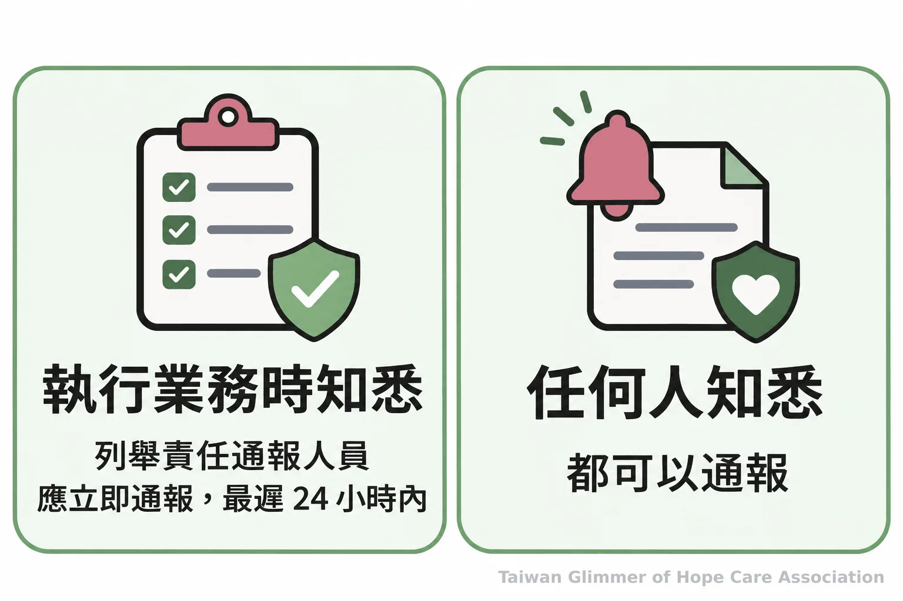
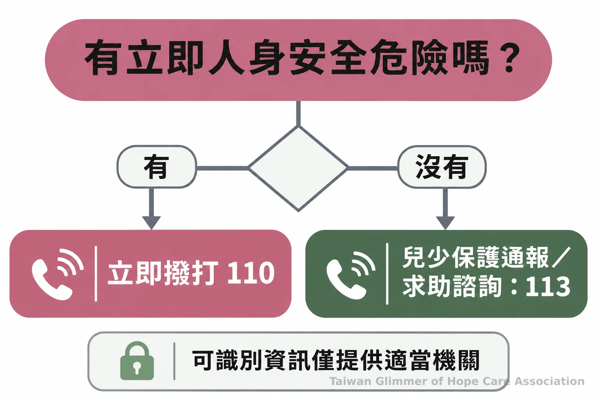

什麼是兒少責任通報？國小孩子跨場域照顧的分工
國小兒童每天往返學校、安親班與家庭，日常照顧如何交接？整理兒少權法第53條責任通報條件、校園輔導分工，以及113、110求助方式。
【看見不同年紀的孩子｜系列一之 3】
國小兒童一天可能先到學校，再去安親班，最後回家。每個場域的大人都負責眼前的照顧，也只看得到孩子生活的一部分。家長、老師與課後照顧者若先約好聯絡窗口和交接方式，日常訊息較不容易中斷；若出現兒少保護疑慮，則要依法律通報，不能把責任全推給下一位照顧者。
孩子的出席、接送安排或情緒狀況有變化時，成人可以交換必要事實並確認由誰跟進。不同身分的法定義務各有界線，安親班工作者是否屬責任通報人，不能只看工作場所判斷。想了解學校人員的法定流程，可參考教育人員責任通報與校園處理機制；接下來先從每天交接時能做的事談起。
一、跨場域照顧先約好誰聯絡誰
日常照顧由實際陪伴孩子的大人分段承接，家長可先確認各場域的聯絡窗口與通知方式。這種安排有助於傳遞必要訊息，不代表任何一方能代替其他人履行法定義務。
開學、換班或接送安排改變時，家長可確認導師和安親班的聯絡方式，約定孩子未到、提早離開或接送人變更時怎麼通知。傳達日期、到離校情況和已採取的聯繫即可，家庭細節、猜測或未查明的說法不必放進多人群組。
若觀察不一致，可把各自親眼看見的事按時間整理，再交給校內或社政窗口；家長和課後照顧者不必私下查明原因。
二、第53條如何區分責任通報與一般通報
第53條列出特定人員在執行業務時知悉法定情形的通報義務；任何人知悉這些情形，也可以通報。安親班或其他照顧工作者是否屬列舉人員，須依實際職務與法規判斷。
全國法規資料庫《兒童及少年福利與權益保障法》第53條列出醫事、社工、教育、保育、教保服務、警察、司法、移民、戶政、村（里）幹事及其他執行兒少福利業務人員。這些人員執行業務時知悉條文所列情形，應立即向地方主管機關通報，最遲不得超過24小時；任何人知悉也都可以通報。
是否屬責任通報人，須看實際職務與業務內容；有疑問可詢問地方主管機關。一般民眾不必等自行查證完畢才求助。
「應立即向直轄市、縣（市）主管機關通報，至遲不得超過二十四小時」 全國法規資料庫，《兒童及少年福利與權益保障法》第53條

三、交接只傳必要事實，保護孩子隱私
記下可觀察的時間、場景與事實，並透過適當窗口處理。不要在群組散布孩子姓名、影像、家庭細節或未確認的指控，也不要自行追問或對質。
可記錄孩子未到課、接送安排變更，或孩子主動說出的原話，並註明時間與得知者。不要以「一定被打了」等結論取代觀察，也別讓孩子向多位成人反覆說明；紀錄是為了轉達所見所聞，不是自行調查或判定責任。
兒少權法第69條限制媒體及其他公示方式揭露特定兒少的姓名或可識別資訊。只讓必要人員取得處理所需內容，不轉傳照片、截圖或家庭傳聞。教育部說明，學校通報後由校內輔導專業人員評估協助事項，並連結地方社政主管機關。
四、微光以在地合作連結照顧資源
微光採取與在地單位合作的方式，在既有社區據點開設藝術陪伴課。這類課程是陪伴安排，不能取代法定通報、學校輔導或社政專業評估。
微光不另建據點，而是走進已照顧脆弱家庭孩子的在地單位，以「在地小衛星」方式合作。板橋明穗據點由明穗教會承接，陪伴服務已七年；中壢宣愛據點與桃園市宣愛社區關懷協會合作，於2026年9月開課，是桃園第一個據點；瑞芳愛鄰據點與愛鄰希望關懷協會合作，2025年8月開設第一個兒童繪畫班，也是微光的起點。每個據點每月一堂藝術陪伴課，課程從藝術家作品帶出情緒主題，不設標準答案，也不比較畫得好不好。
照片與紀錄，請見〈桃園第一個據點開課：中壢宣愛「心情的顏色」〉及〈瑞芳愛鄰據點：跟著夏卡爾，飛進我的夢想花園〉。
五、有兒少保護疑慮時，113與110怎麼選
兒少保護通報或求助諮詢可撥113；若有立即人身安全危險，先撥110。通報是交由主管機關依法評估處理，不等於通報者自行調查、認定責任或決定安置。
衛生福利部說明，113保護專線全年24小時受理兒少保護通報或求助諮詢。可提供孩子所在地、時間與已知情況；若有立即危險，先撥110。社區分工也可參考兒少保護民間守護網的工作分配。
- 先記下親眼所見或親耳聽到的事實與時間。
- 依實際職務履行責任通報；一般民眾也可向地方主管機關通報或撥113諮詢。
- 立即人身安全危險，直接撥110；不在群組散布孩子可識別資訊。

常見問題
Q1：家長是第53條的責任通報人嗎？
家長可通報；責任通報義務依第53條列舉身分及執行業務情況判斷。
Q2：安親班所有工作者都必須在24小時內通報嗎？
須依實際職務判斷；任何人知悉法定情形都可以通報。
Q3：還不能確定發生什麼事，可以先打113嗎？
可以。衛福部113專線提供兒少保護通報與求助諮詢，民眾可說明已知情況並詢問處理方式。
Q4：通報後孩子會立刻被帶走嗎？
不一定。地方主管機關依法評估處理，通報不等同立即安置。
Q5：可以在家長群組貼孩子的照片請大家判斷嗎？
不應在群組或社群散布孩子可識別資訊及未確認指控。必要資訊交給適當的校內人員或地方主管機關處理。
- 日常照顧由不同場域的大人分段承接，先約定窗口與通知方式，只交換必要事實。
- 第53條的責任通報義務依人員身分及執行業務情況判斷；安親班工作者不可一概推定，任何人知悉法定情形都得通報。
- 兒少保護諮詢或通報撥113；立即人身安全危險撥110。保護孩子，也要避免公開其可識別資訊。
參考資料
通報義務與兒少隱私依全國法規資料庫條文，學校輔導及113求助方式依教育部與衛福部說明。
- 全國法規資料庫。《兒童及少年福利與權益保障法》第53條、第69條。https://law.moj.gov.tw/LawClass/LawAll.aspx?PCode=D0050001
- 衛生福利部保護服務司。113保護專線介紹。https://dep.mohw.gov.tw/DOPs/fp-1183-6499-105.html
- 教育部學生事務及特殊教育司。教育部對兒虐零容忍，有關學校對於兒少保護之通報、輔導與處理機制說明。https://depart.moe.edu.tw/ed2800/News_Content.aspx?n=9C2F51A0AD31862F&s=081DF54EB6C58A3A
本文同步刊於 appi.news。